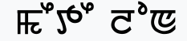

Manipuri
Manipuri or Meitheilon, Meeteilon, Meitei, Meetei is a Sino-Tibetan language and the predominant language and lingua franca in the southeastern Himalayan state of Manipur, in northeastern India.
Meitei is the most spoken Sino-Tibetan language of India and the most spoken language in Northeast India after Bengali and Assamese.There are around 200,000 native speakers of Meitei abroad.
Meiteilon is taught as a subject up to the post-graduate level (Ph.D.) in some universities of India, apart from being a medium of instruction up to the undergraduate level in Manipur. Education in government schools is provided in Meiteilon through the eighth standard.Meiteilon is also spoken in the Northeast Indian states of Assam and Tripura and in Bangladesh and Burma (now Myanmar). It is currently classified as a vulnerable language by UNESCO.
- Native speakers: 2 million approximately
- Region: Northeast India, Bangladesh, Myanmar
